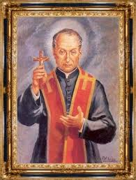

"SÃO GASPAR BERTONI"


“ELE REZAVA MUITO, PORQUE ESTAVA ABSOLUTAMENTE CONVENCIDO DE QUE È ATRAVÉS DAS ORAÇÕES, NUM PERMANENTE CONTATO COM DEUS, QUE TODAS AS QUESTÕES E MESMO OS PROBLEMAS MAIS DIFÍCEIS, SÃO RESOLVIDOS COM DIGNIDADE E PACIÊNCIA, ILUMINADOS PELO ESPÍRITO SANTO DE DEUS”.

=ÍNDICE=
 - "A
CONGREGAÇÃO, VITÓRIA DO AMOR".
- "A
CONGREGAÇÃO, VITÓRIA DO AMOR".